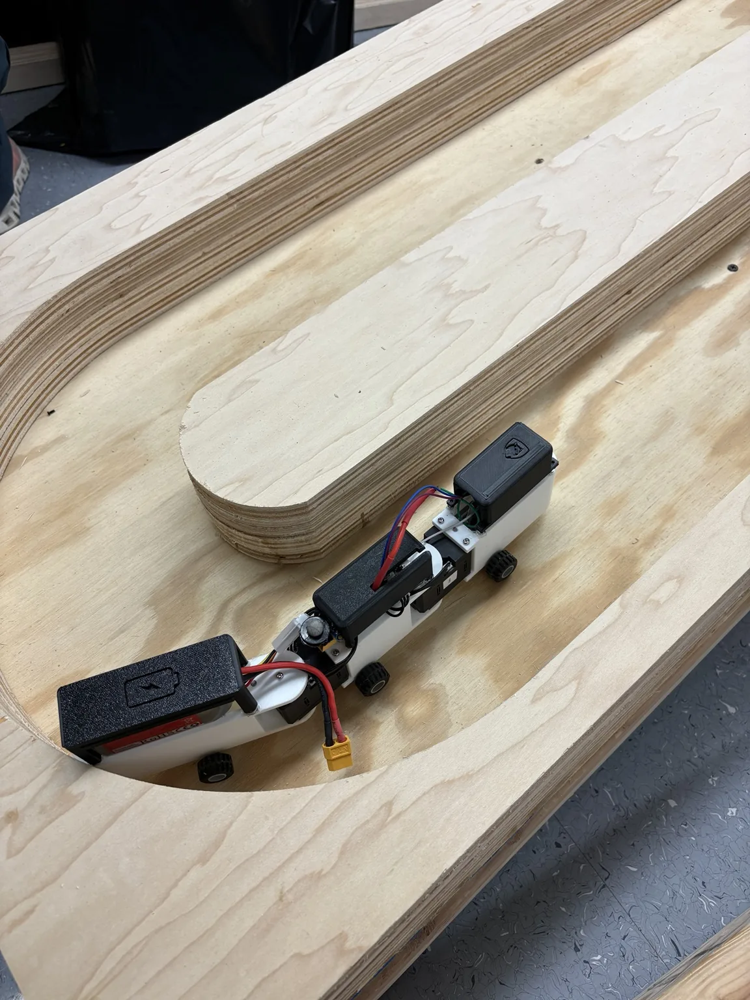
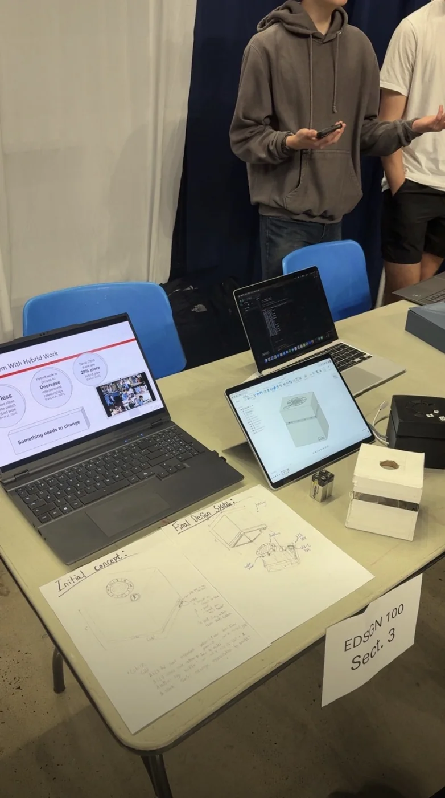
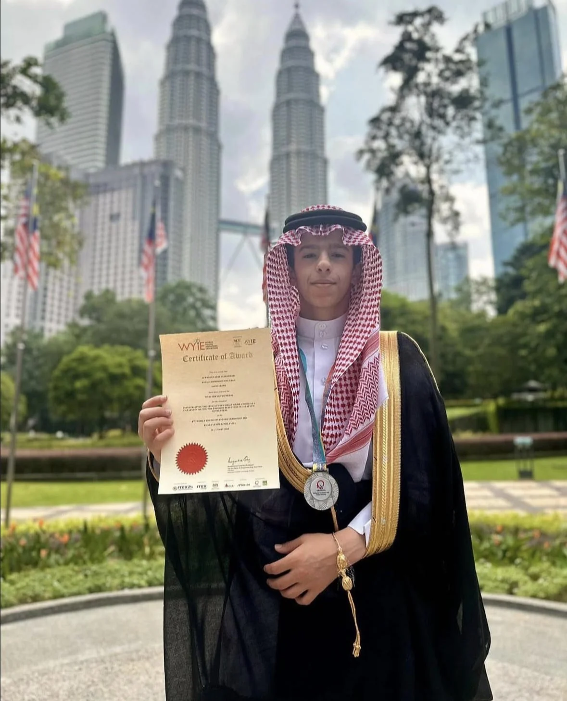
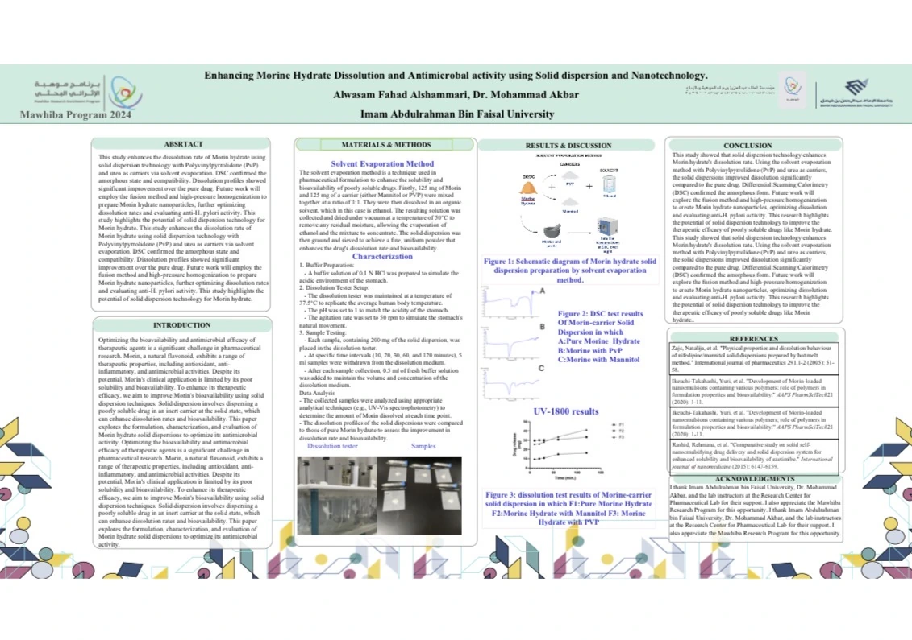
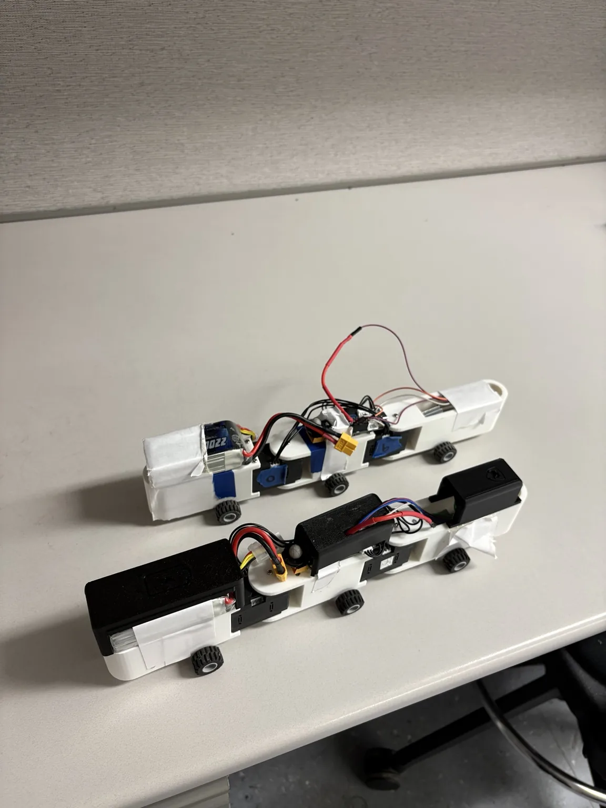
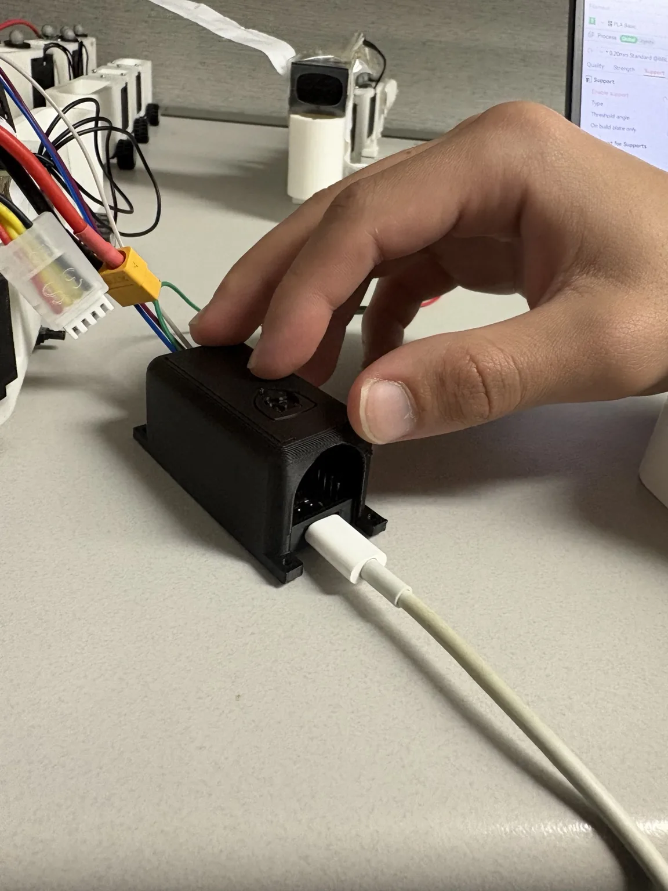
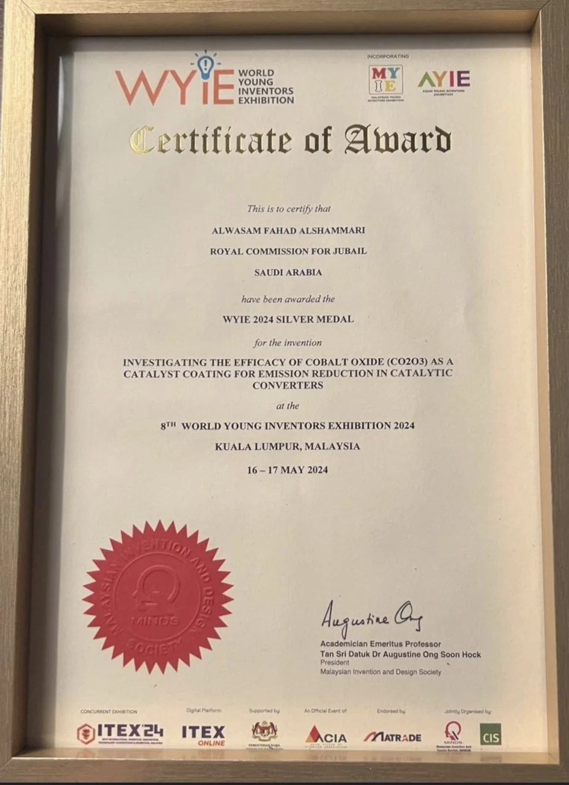
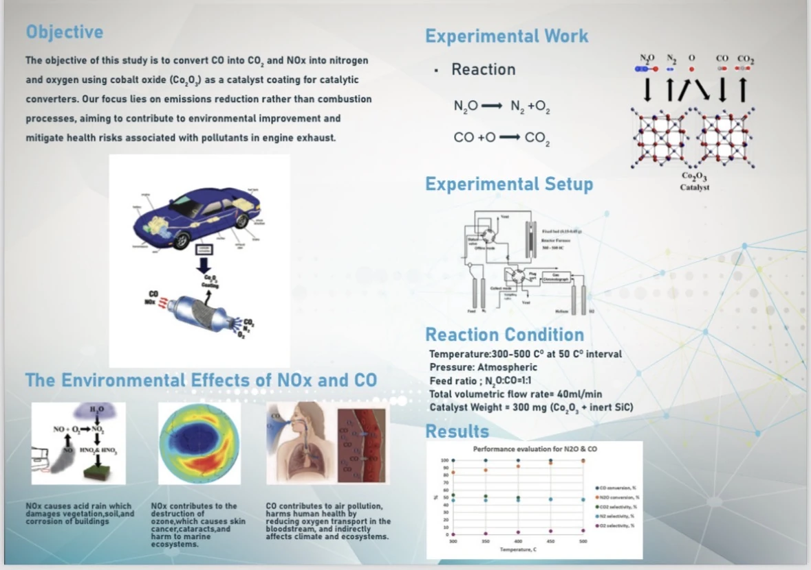
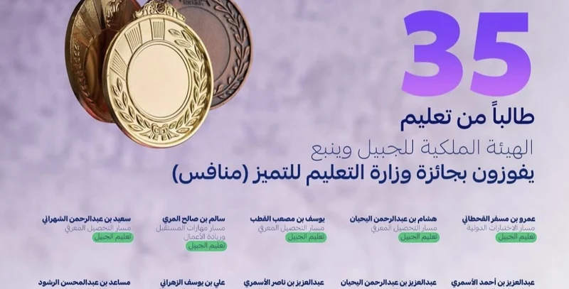

Current ResearchThree-Link Robot Locomotion
Investigating shape-changing wheeled robots in confined tunnels, while supporting experiments, data collection, and iterative 3D-printed component design.
MECHANICAL ENGINEERING · RESEARCH · HANDS-ON DESIGN
I’m a mechanical engineering student at Penn State who turns technical questions into practical designs, experiments, and results.
I enjoy building useful hardware, testing ideas, and understanding how systems work—from automotive emissions and materials to product design and robotics.

FEATURED WORK
Selected work spanning mechanical engineering, materials, automotive emissions, product design, and robotics.

Current ResearchInvestigating shape-changing wheeled robots in confined tunnels, while supporting experiments, data collection, and iterative 3D-printed component design.

Design ProjectDesigned and presented a client-driven hybrid-work concept with a physical prototype and CAD work; our team won the People’s Choice Award.

Award-Winning ResearchInvestigated cobalt oxide catalytic coatings at 300–500°C, achieving 99.9% CO conversion and 83.9–98.8% N₂O conversion.

Mawhiba Research · 120 hoursDeveloped and tested Morin hydrate solid dispersions using PVP and mannitol. The formulations improved dissolution compared with pure Morin hydrate.
PROJECT DETAILS
I study locomotion through hands-on experiments with wheeled, three-link robots. My work includes test setup, video documentation, CAD design, and 3D-printed hardware improvements.
We study how a three-link wheeled robot moves by changing its body shape. The robot has three rigid sections and two joints, and its motion depends on gait patterns, wheel orientation, and how it interacts with the surrounding surface.
A big part of the work is comparing theory and experiments: running physical tests in curved or constrained tunnels, recording the robot’s motion, and improving the hardware used in those experiments.
Ongoing work includes documenting robot motion and preparing measurements to compare different locomotion conditions.



PROJECT DETAILS
Our first-year engineering design team worked on a client-driven concept addressing communication and collaboration challenges in hybrid work environments.
Our team received the People’s Choice Award at the Spring 2026 Engineering Design Showcase.
PROJECT DETAILS

 Open the full exhibition poster ↗
Open the full exhibition poster ↗
View experimental setup & reaction brochure ↗Vehicle exhaust can contain carbon monoxide (CO), a toxic gas, and nitrogen-containing pollutants. Our research explored whether cobalt(III) oxide (Co₂O₃) could improve pollutant conversion in automotive catalytic converters.
The investigated reactions convert CO into CO₂ and decompose nitrous oxide (N₂O) into nitrogen and oxygen. Lowering CO reduces an immediate poisoning hazard; reducing N₂O addresses a potent greenhouse gas.
These findings demonstrate strong pollutant conversion under the tested conditions. The project received a Silver Medal at WYIE 2024.
PROJECT DETAILS
Morin hydrate has poor water solubility, which can limit how readily it dissolves. I studied whether solid dispersions could improve its dissolution behavior.
The solid dispersion formulations showed improved dissolution compared with pure Morin hydrate. Thermal characterization supported a change toward a less crystalline, more amorphous form. These findings illustrate how formulation techniques can improve the dissolution of poorly water-soluble compounds.
RESEARCH & EXPERIENCE
A progression from materials and emissions research to engineering design and current robotics experiments.
Robotics experiments, tunnel testing, 3D-printed component design, and experimental support for locomotion research.
Client-driven design work recognized with a People’s Choice Award at the Engineering Design Showcase.
Pharmaceutical research on Morin hydrate dissolution and material characterization.
Cobalt oxide catalytic converter research later recognized with a WYIE 2024 Silver Medal.
SKILLS & TOOLS
RECOGNITION
Recognized for research on cobalt oxide catalyst coating for emission reduction in catalytic converters.
Penn State Engineering Design Showcase · EDSGN 100 · Spring 2026.

Saudi Arabia · March 2025. Recognized by the Ministry of Education through the Royal Commission for Jubail and Yanbu; awarded in the presence of the Eastern Province Governor.

ABOUT ME
Mechanical engineering appeals to me because it connects many different kinds of problems. I have explored vehicle emissions, pharmaceutical materials, product design, and robotic locomotion, and I value what each experience teaches me about designing and testing real systems.
I want to become a versatile engineer with strong analytical, design, and hands-on skills. I am looking for opportunities to learn, collaborate, and contribute to meaningful engineering work.
RÉSUMÉ & CONTACT
If you’d like to discuss research, project work, or opportunities, feel free to reach out.